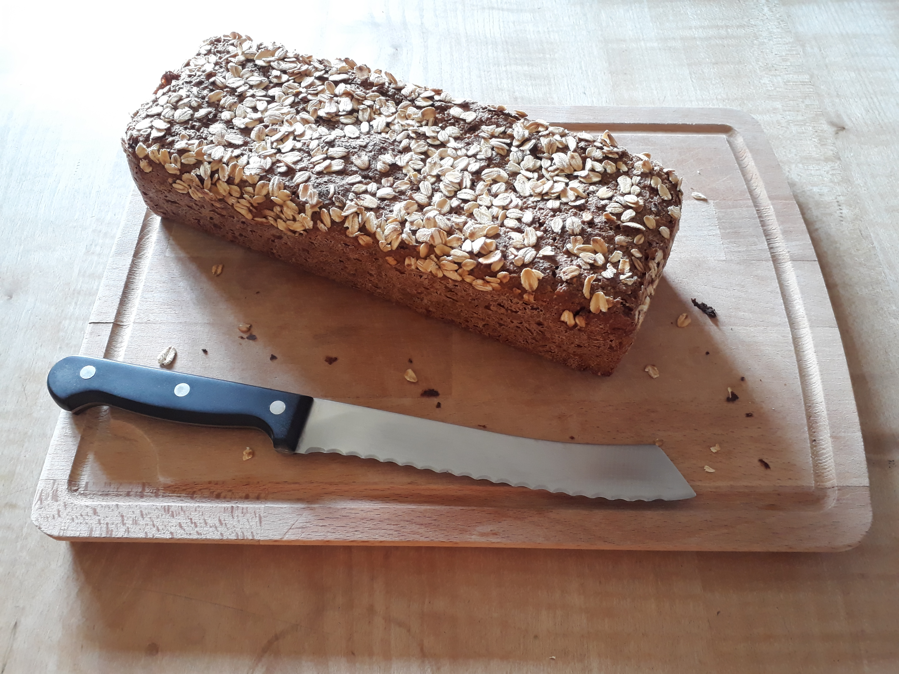

Nachgebasteltes "Brot mit den Haferflocken" a.k.a. Opa Heinz Brot basierend auf dem Rezept für "faules Brot" a.k.a. Roggenbrot über Nacht
Zutaten
Sauerteig:
| 150 | g | Roggenvollkornmehl |
| 120 | g | Wasser, ca. 40°C |
| 3 | g | Salz |
| 30 | g | Anstellgut |
Quellstück
| 40 | g | Sonnenblumenkerne |
| 30 | g | Buchweizen |
| 30 | g | Haferflocken |
| 300 | g | Wasser, kochend |
| 7 | g | Salz |
Teig:
| 200 | g | Roggenvollkornmehl |
| 100 | g | Dinkelvollkornmehl |
| 50 | g | Hafervollkornmehl |
| ca. 2 | EL | Haferflocken zum Bestreuen |
Anleitung
- Sauerteigzutaten vermischen und bei Zimmertemperatur ca. 24h reifen lassen
- Quellstückzutaten vermischen und abgedeckt bei Zimmertemperatur ca. 12h quellen lassen
- Nach dem reifen/quellen Sauerteig und Quellstück mit Roggen-, Dinkel- und Hafermehl ca. 10 min zu einem klebrigen Teig kneten. (Am Besten mit ner Küchenmaschine/Rührgerät, wenn man nicht gerne stundenlang klebrigen Teig von den Händen waschen will.)
- Teig in eine mit Backpapier ausgelegte oder sehr gut bemehlte Kastenform geben, mit Haferflocken bestreuen und bei Zimmertemperatur ca. 10h gehen lassen.
- 90min bei 200°C backen